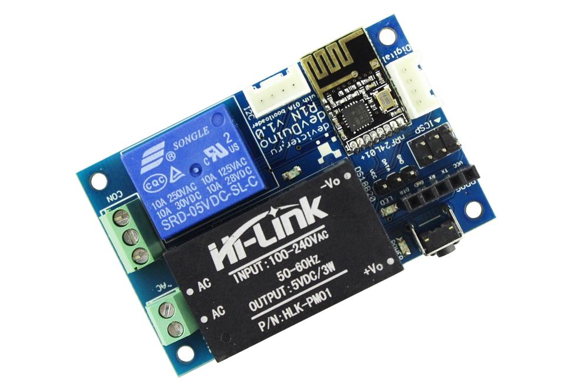

devDuino Relay 1 Node is a compact, Arduino-compatible microcontroller with a built-in power supply from the AC mains supply, a compact switch and is designed for wireless networks based on transceiver NRF24L01 +.
This version supports firmware upgrade over the air (on the basis of UNO Optiboot loader) and data encryption.
You can easily connect other sensors or display for this platform to build a remote monitoring or for example to make a smart thermostat.
|  | |